(15) Simulation – draft¶
Motivation:
# HIDE CODE
import os
import sys
from copy import deepcopy as dc
from os.path import join as pjoin
from IPython.display import display, IFrame, HTML
# tmp & extras dir
git_dir = pjoin(os.environ['HOME'], 'Dropbox/git')
extras_dir = pjoin(git_dir, 'jb-MTMST/_extras')
fig_base_dir = pjoin(git_dir, 'jb-MTMST/figs')
tmp_dir = pjoin(git_dir, 'jb-MTMST/tmp')
# GitHub
sys.path.insert(0, pjoin(git_dir, '_MTMST'))
from analysis.opticflow import *
# warnings, tqdm, & style
warnings.filterwarnings('ignore', category=DeprecationWarning)
from tqdm.notebook import tqdm
from rich.jupyter import print
%matplotlib inline
set_style()
# HIDE CODE
def _show1(absolute=False):
fig, axes = create_figure(2, 4, (13.3, 5.5), 'all', 'all', constrained_layout=True)
im = axes[0, 0].imshow(np.abs(alpha_dot[..., 0]) if absolute else alpha_dot[..., 0])
axes[0, 0].set_title(r'$\dot{\alpha}_x$', fontsize=20)
plt.colorbar(im, ax=axes[0, 0])
im = axes[0, 1].imshow(np.abs(alpha_dot[..., 1]) if absolute else alpha_dot[..., 1])
axes[0, 1].set_title(r'$\dot{\alpha}_y$', fontsize=20)
plt.colorbar(im, ax=axes[0, 1])
im = axes[0, 2].imshow(np.abs(rho_dot) if absolute else rho_dot)
axes[0, 2].set_title(r'$\dot{\rho}$', fontsize=20)
plt.colorbar(im, ax=axes[0, 2])
im = axes[0, 3].imshow(np.abs(phi_dot) if absolute else phi_dot)
axes[0, 3].set_title(r'$\dot{\phi}$', fontsize=20)
plt.colorbar(im, ax=axes[0, 3])
im = axes[1, 0].imshow(np.abs(arc_x) if absolute else arc_x)
axes[1, 0].set_title(r'$arc_x$', fontsize=20)
plt.colorbar(im, ax=axes[1, 0])
im = axes[1, 1].imshow(np.abs(arc_y) if absolute else arc_y)
axes[1, 1].set_title(r'$arc_y$', fontsize=20)
plt.colorbar(im, ax=axes[1, 1])
im = axes[1, 2].imshow(np.abs(rho) if absolute else rho)
axes[1, 2].set_title(r'$\rho$', fontsize=20)
plt.colorbar(im, ax=axes[1, 2])
im = axes[1, 3].imshow(np.abs(phi) if absolute else phi)
axes[1, 3].set_title(r'$\phi$', fontsize=20)
plt.colorbar(im, ax=axes[1, 3])
axes.flat[-1].invert_yaxis()
plt.show()
Initial¶
x0 = 10
y0 = 0
z = 30
delta = 15
theta_1 = np.rad2deg(np.arctan(delta / z / (1 + (x0 * (x0 - delta) / z**2))))
theta_2 = np.rad2deg(np.arctan(delta / z / (1 + (x0 * (x0 + delta) / z**2))))
theta_1, theta_2
(27.89727103094763, 21.370622269343183)
w = 500
x0 = 10
y0 = 0
x = 20
y = 0
z = 30
fix = (x0, y0, z)
xv, yv = np.meshgrid(*(np.linspace(-w, w, 2 * w + 1),) * 2,)
points = np.concatenate([
np.expand_dims(xv, -1),
np.expand_dims(yv, -1),
], axis=-1)
points.shape
(1001, 1001, 2)
rho, theta = to_polar(points)
fig, axes = create_figure(2, 2, (8, 6.5), sharey='row', constrained_layout=True)
im = axes[0, 0].imshow(rho, vmin=0)
plt.colorbar(im, ax=axes[0, 0])
im = axes[0, 1].imshow(theta, cmap='hsv', vmin=0, vmax=2*np.pi)
plt.colorbar(im, ax=axes[0, 1])
sns.histplot(rho.ravel(), stat='percent', bins=np.linspace(0, 71, 72), ax=axes[1, 0])
sns.histplot(theta.ravel(), stat='percent', bins=np.linspace(0, 2 * np.pi, 46), ax=axes[1, 1])
plt.show()
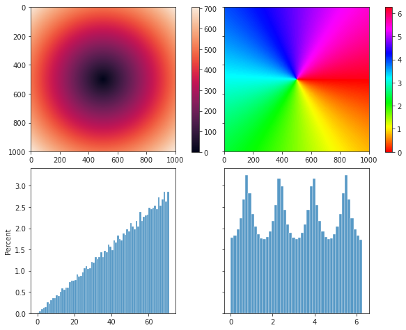
rho[w, w], theta[w, w]
(0.0, nan)
points = np.concatenate([
points,
np.ones((*xv.shape, 1)) * z,
], axis=-1)
points.shape
(1001, 1001, 3)
theta = sp_dist.cdist(
XA=np.array(fix).reshape(1, -1),
XB=flatten_arr(points),
metric='cosine',
).reshape(xv.shape)
fig, ax = create_figure()
im = ax.imshow(theta)
plt.colorbar(im, ax=ax)
ax.set_xlabel('x', fontsize=14)
ax.set_ylabel('y', fontsize=14)
ax.invert_yaxis()
plt.show()
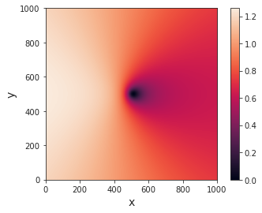
w = 500
x0 = 30
y0 = 0
z = 30
fix = (x0, y0, z)
linspace = np.linspace(-w, w, 2 * w + 1)
ticks, ticklabels = zip(*[
(i, str(int(x))) for i, x in
enumerate(linspace)
if i % 100 == 0
])
xv, yv = np.meshgrid(*(linspace,) * 2,)
points = np.concatenate([
np.expand_dims(xv, -1),
np.expand_dims(yv, -1),
], axis=-1)
points = np.concatenate([
points,
np.ones((*xv.shape, 1)) * z,
], axis=-1)
theta = 1 - sp_dist.cdist(
XA=np.array(fix).reshape(1, -1),
XB=flatten_arr(points),
metric='cosine',
).reshape(xv.shape)
theta = np.arccos(theta)
fig, ax = create_figure(figsize=(5, 4), constrained_layout=True)
im = ax.imshow(theta, cmap='hsv', vmin=0, vmax=2*np.pi)
plt.colorbar(im, ax=ax)
ax.set_xlabel('x', fontsize=14)
ax.set_ylabel('y', fontsize=14)
ax.set(
xticks=ticks,
yticks=ticks,
xticklabels=ticklabels,
yticklabels=ticklabels,
)
ax.tick_params(axis='x', rotation=-90)
ax.invert_yaxis()
plt.show()
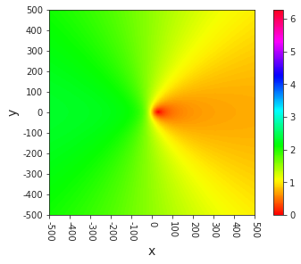
fig, ax = create_figure(figsize=(5, 4), constrained_layout=True)
im = ax.imshow(theta, cmap='hsv', vmin=0, vmax=np.pi)
plt.colorbar(im, ax=ax)
ax.set_xlabel('x', fontsize=14)
ax.set_ylabel('y', fontsize=14)
ax.set(
xticks=ticks,
yticks=ticks,
xticklabels=ticklabels,
yticklabels=ticklabels,
)
ax.tick_params(axis='x', rotation=-90)
ax.invert_yaxis()
plt.show()
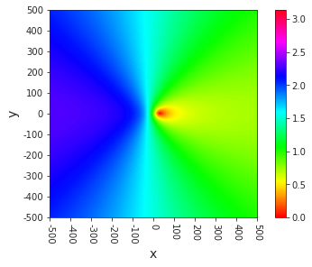
sns.histplot(theta.ravel())
<AxesSubplot:ylabel='Count'>
np.rad2deg(np.max(theta))
131.56636963754949
def compute_radial_distance(
fix: Tuple[float, float, float],
w: int = 500, ):
span = np.linspace(-w, w, 2 * w + 1)
xv, yv = np.meshgrid(*(span,) * 2,)
points = np.concatenate([
np.expand_dims(xv, -1),
np.expand_dims(yv, -1),
], axis=-1)
points = np.concatenate([
points,
np.ones((*xv.shape, 1)) * fix[-1],
], axis=-1)
theta = 1 - sp_dist.cdist(
XA=np.array(fix).reshape(1, -1),
XB=flatten_arr(points),
metric='cosine',
).reshape(xv.shape)
theta = np.arccos(theta)
return theta, points, span
w_inf = 500
x0 = 40
y0 = 0
z = 30
fix = (x0, y0, z)
theta, points, span = compute_radial_distance(fix, w_inf)
fig, ax = create_figure(figsize=(5, 4), constrained_layout=True)
im = ax.imshow(theta, cmap='hsv', vmin=0, vmax=2*np.pi)
plt.colorbar(im, ax=ax)
ax.set_xlabel('x', fontsize=14)
ax.set_ylabel('y', fontsize=14)
ticks, ticklabels = zip(*[
(i, str(int(x))) for i, x
in enumerate(span)
if i % 100 == 0
])
ax.set(
xticks=ticks,
yticks=ticks,
xticklabels=ticklabels,
yticklabels=ticklabels,
)
ax.tick_params(axis='x', rotation=-90)
ax.invert_yaxis()
plt.show()
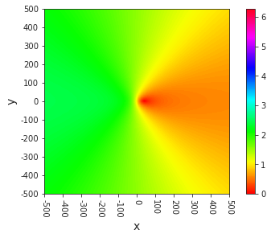
w = 100
xr = range(w_inf + x0 - w, w_inf + x0 + w + 1)
yr = range(w_inf + y0 - w, w_inf + y0 + w + 1)
theta = theta[yr][:, xr]
theta.shape
(201, 201)
fig, ax = create_figure(figsize=(5, 4), constrained_layout=True)
im = ax.imshow(theta, cmap='hsv', vmin=0, vmax=2*np.pi)
plt.colorbar(im, ax=ax)
ax.set_xlabel('x', fontsize=14)
ax.set_ylabel('y', fontsize=14)
ax.tick_params(axis='x', rotation=-90)
ax.invert_yaxis()
plt.show()
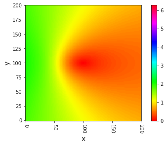
from skimage.transform import resize
aaa = resize(theta, (25,) * 2)
aaa.shape
(25, 25)
fig, ax = create_figure(figsize=(5, 4), constrained_layout=True)
im = ax.imshow(aaa, cmap='hsv', vmin=0, vmax=2*np.pi)
plt.colorbar(im, ax=ax)
ax.set_xlabel('x', fontsize=14)
ax.set_ylabel('y', fontsize=14)
ax.tick_params(axis='x', rotation=-90)
ax.invert_yaxis()
plt.show()
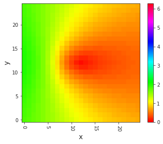
theta_x = np.arctan((points[..., 0]) / points[..., 2]) - np.arctan(x0 / z)
theta_y = np.arctan((points[..., 1]) / points[..., 2]) - np.arctan(y0 / z)
sns.histplot(theta_x.ravel())
sns.histplot(theta_y.ravel(), color='C1')
<AxesSubplot:ylabel='Count'>
np.min(theta_x), np.max(theta_x)
(-2.4381633896753008, 0.5835729536720765)
np.min(theta_y), np.max(theta_y)
(-1.5108681716736887, 1.5108681716736887)
fig, axes = create_figure(1, 2, (8, 3))
axes[0].imshow(theta_x, vmin=-np.pi, vmax=np.pi)
axes[1].imshow(theta_y, vmin=-np.pi, vmax=np.pi)
<matplotlib.image.AxesImage at 0x7f4dc397fac0>
theta_x = theta_x[yr][:, xr]
theta_y = theta_y[yr][:, xr]
fig, axes = create_figure(1, 2, (8, 3))
axes[0].imshow(theta_x, vmin=-np.pi, vmax=np.pi)
axes[1].imshow(theta_y, vmin=-np.pi, vmax=np.pi)
<matplotlib.image.AxesImage at 0x7f4dc38b5790>
fig, axes = create_figure(1, 2, (8, 3))
axes[0].imshow(np.abs(theta_x))#, vmin=-np.pi, vmax=np.pi)
axes[1].imshow(np.abs(theta_y))#, vmin=-np.pi, vmax=np.pi)
<matplotlib.image.AxesImage at 0x7f4dc37ea310>
np.rad2deg(np.arctan(x0 / z)), np.rad2deg(np.arctan(y0 / z))
(53.13010235415598, 0.0)
Comptue \(\dot{\theta}\) from linear velocities¶
def _theta_dot(points, fix, axis):
assert axis in [0, 1]
prod = points[..., axis] * fix[axis]
add = points[..., axis] + fix[axis]
sub = points[..., axis] - fix[axis]
numin = sub * (
np.einsum('i, jk -> ijk', velocity[:, axis], add) * fix[-1] +
np.einsum('i, jk -> ijk', velocity[:, -1], fix[-1] ** 2 - prod)
)
denum = (
(fix[-1] * sub) ** 2 +
(fix[-1] ** 2 + prod) ** 2
)
return numin / np.expand_dims(denum, axis=0)
def angular_velocity(
velocity: np.ndarray,
fix: Tuple[float, float, float],
w: int = 500, ):
assert velocity.ndim == 2 and velocity.shape[1] == 3
span = np.linspace(-w, w, 2 * w + 1)
xv, yv = np.meshgrid(*(span,) * 2,)
points = np.concatenate([
np.expand_dims(xv, -1),
np.expand_dims(yv, -1),
], axis=-1)
vel = np.concatenate([
np.expand_dims(_theta_dot(points, fix, 0), axis=-1),
np.expand_dims(_theta_dot(points, fix, 1), axis=-1),
], axis=-1)
return vel, points
w = 500
x0 = 40
y0 = 0
z = 30
fix = (x0, y0, z)
velocity = np.array([[1, 0, 2], [-1, 0, 3], [0, 0, 1], [1, 1, 1], [0, 0, 10]])
vel, points = angular_velocity(velocity, fix, w)
velocity.shape, vel.shape, points.shape
((5, 3), (5, 1001, 1001, 2), (1001, 1001, 2))
vel, points = angular_velocity(velocity, (0, 0, 20))
rho, theta = to_polar(vel[0])
plt.imshow(theta)
plt.colorbar()
<matplotlib.colorbar.Colorbar at 0x7f75092c0eb0>
sns.histplot(theta.ravel())
<AxesSubplot:ylabel='Count'>
np.min(vel[0][..., 0]), np.max(vel[0][..., 0])
(-0.030882352941176472, 0.08089887640449438)
plt.imshow(vel[0][..., 1], vmin=-0.081, vmax=0.081, cmap='bwr')
plt.colorbar()
<matplotlib.colorbar.Colorbar at 0x7f7509e0bc10>
np.min(vel[0][..., 1]), np.max(vel[0][..., 1])
(-0.05, 0.05)
plt.imshow(vel[0][..., 1], vmin=-0.05, vmax=0.05, cmap='bwr')
plt.colorbar()
<matplotlib.colorbar.Colorbar at 0x7f7509b1fee0>
tmp_x = _theta_dot(points, fix, 0)
tmp_y = _theta_dot(points, fix, 1)
plt.imshow(tmp_y[0])
<matplotlib.image.AxesImage at 0x7f4db7fd74c0>
plt.imshow(tmp_x[0], vmin=-0.07, vmax=0.07, cmap='bwr')
plt.colorbar()
<matplotlib.colorbar.Colorbar at 0x7f4db7adf4f0>
plt.imshow(tmp_y[0], vmin=-0.033, vmax=0.033, cmap='bwr')
plt.colorbar()
<matplotlib.colorbar.Colorbar at 0x7f4dbc342640>
points.shape
(1001, 1001, 2)
plt.imshow(points[..., 0])
plt.colorbar()
<matplotlib.colorbar.Colorbar at 0x7f750999d7f0>
points[600, 600], points[400, 600]
(array([100., 100.]), array([ 100., -100.]))
vel[0][600, 600], vel[0][400, 600]
(array([0.06730769, 0.01923077]), array([ 0.06730769, -0.01923077]))
points[600, 600], points[600, 400]
(array([100., 100.]), array([-100., 100.]))
vel[0][600, 600], vel[0][600, 400]
(array([0.06730769, 0.01923077]), array([0.02884615, 0.01923077]))
plt.plot(vel[0][600])
plt.axhline(0, color='k')
<matplotlib.lines.Line2D at 0x7f7509937820>
plt.plot(vel[0][:, 600, :])
plt.axhline(0, color='k')
<matplotlib.lines.Line2D at 0x7f750901e3a0>
New¶
x1 = 5
y1 = 5
z = 10
vz = -1
alpha_dot_x = -x1 * vz / (z**2 + x1**2)
alpha_dot_y = -y1 * vz / (z**2 + y1**2)
alpha_dot_x, alpha_dot_y
(0.04, 0.04)
phi = np.arctan(np.arctan(y1/z) / np.arctan(x1/z))
rho = np.sqrt(np.arctan(y1/z) ** 2 + np.arctan(x1/z) ** 2)
rho, phi
(0.6556967368107979, 0.7853981633974483)
rho_dot = np.cos(phi) * alpha_dot_x + np.sin(phi) * alpha_dot_y
phi_dot = (- np.sin(phi) * alpha_dot_x + np.cos(phi) * alpha_dot_y) / rho
rho_dot, phi_dot
(0.0565685424949238, 1.0582474357973593e-17)
def func(x, y, z=10, vz=-1):
alpha_dot_x = -x * vz / (z**2 + x**2)
alpha_dot_y = -y * vz / (z**2 + y**2)
arc_x = np.arctan(x/z)
arc_y = np.arctan(y/z)
rho = np.sqrt(arc_y**2 + arc_x**2)
arc_x = np.arctan2(x, z)
arc_y = np.arctan2(y, z)
if arc_x < 0:
arc_x += 2 * np.pi
if arc_y < 0:
arc_y += 2 * np.pi
if arc_x != 0:
phi = np.arctan(arc_y / arc_x)
else:
phi = np.pi / 2
rho_dot = np.cos(phi) * alpha_dot_x + np.sin(phi) * alpha_dot_y
if rho == 0:
phi_dot = 0
else:
phi_dot = (- np.sin(phi) * alpha_dot_x + np.cos(phi) * alpha_dot_y) / rho
return alpha_dot_x, alpha_dot_y, rho_dot, phi_dot, arc_x, arc_y
num = 50
width = 2 * num + 1
span = np.linspace(-num, num, width)
alpha_dot = np_nans((width, width, 2))
rho_dot = np_nans((width, width))
phi_dot = np_nans((width, width))
arc_x = np_nans((width, width))
arc_y = np_nans((width, width))
for i, x in enumerate(span):
for j, y in enumerate(span):
r = np.sqrt(x**2 + y**2)
# if r > 15 or r < 13:
# continue
a, b, c, d, e, f = func(x, y)
alpha_dot[j, i, 0] = a
alpha_dot[j, i, 1] = b
rho_dot[j, i] = c
phi_dot[j, i] = d
arc_x[j, i] = e
arc_y[j, i] = f
fig, axes = create_figure(1, 4, (13.5, 2.3), 'all', 'all', constrained_layout=True)
im = axes[0].imshow(alpha_dot[..., 0])
plt.colorbar(im, ax=axes[0])
im = axes[1].imshow(alpha_dot[..., 1])
plt.colorbar(im, ax=axes[1])
im = axes[2].imshow(rho_dot)
plt.colorbar(im, ax=axes[2])
im = axes[3].imshow(phi_dot)
plt.colorbar(im, ax=axes[3])
axes[-1].invert_yaxis()
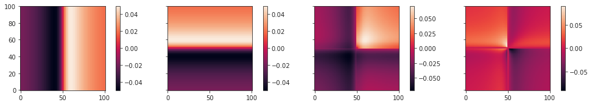
fig, axes = create_figure(1, 4, (13.5, 2.3), 'all', 'all', constrained_layout=True)
im = axes[0].imshow(np.abs(alpha_dot[..., 0]))
plt.colorbar(im, ax=axes[0])
im = axes[1].imshow(np.abs(alpha_dot[..., 1]))
plt.colorbar(im, ax=axes[1])
im = axes[2].imshow(np.abs(rho_dot))
plt.colorbar(im, ax=axes[2])
im = axes[3].imshow(np.abs(phi_dot))
plt.colorbar(im, ax=axes[3])
axes[-1].invert_yaxis()
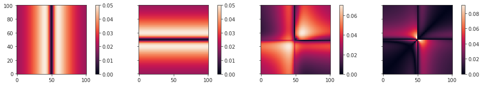
phi_dot[50-2:50+2, 50]
array([-5.96540773e-18, -6.08276300e-18, 0.00000000e+00, 6.08276300e-18])
plt.plot(phi_dot[:, 50])
[<matplotlib.lines.Line2D at 0x7f750564bb80>]
plt.plot(np.abs(rho_dot[:, 50]))
[<matplotlib.lines.Line2D at 0x7f75054ded60>]
On the way to working¶
x = 7
y = 4
z = 10
arc_x = np.arctan(abs(x)/z)
arc_y = np.arctan(abs(y)/z)
rho = np.sqrt(arc_x**2 + arc_y**2)
phi = np.arctan2(arc_y * np.sign(y), arc_x * np.sign(x))
rho, phi, np.rad2deg(phi)
(0.7195632749121554, 0.5571882488305245, 31.924535052274184)
x = -7
y = 4
z = 10
arc_x = np.arctan(abs(x)/z)
arc_y = np.arctan(abs(y)/z)
rho = np.sqrt(arc_x**2 + arc_y**2)
phi = np.arctan2(arc_y * np.sign(y), arc_x * np.sign(x))
rho, phi, np.rad2deg(phi)
(0.7195632749121554, 2.5844044047592685, 148.0754649477258)
Finally, working¶
def func(x, y, z=10, vz=-1):
alpha_dot_x = -x * vz / (z**2 + x**2)
alpha_dot_y = -y * vz / (z**2 + y**2)
arc_x = np.arctan(abs(x)/z)
arc_y = np.arctan(abs(y)/z)
rho = np.sqrt(arc_y**2 + arc_x**2)
phi = np.arctan2(arc_y * np.sign(y), arc_x * np.sign(x))
if phi < 0:
phi += 2 * np.pi
rho_dot = np.cos(phi) * alpha_dot_x + np.sin(phi) * alpha_dot_y
if rho == 0:
phi_dot = 0
else:
phi_dot = (- np.sin(phi) * alpha_dot_x + np.cos(phi) * alpha_dot_y) / rho
output = {
'alpha_dot_x': alpha_dot_x,
'alpha_dot_y': alpha_dot_y,
'rho_dot': rho_dot,
'phi_dot': phi_dot,
'arc_x': arc_x,
'arc_y': arc_y,
'rho': rho,
'phi': phi,
}
return output
num = 50
width = 2 * num + 1
span = np.linspace(-num, num, width)
alpha_dot = np_nans((width, width, 2))
rho_dot = np_nans((width, width))
phi_dot = np_nans((width, width))
arc_x = np_nans((width, width))
arc_y = np_nans((width, width))
rho = np_nans((width, width))
phi = np_nans((width, width))
for i, x in enumerate(span):
for j, y in enumerate(span):
output = func(x, y)
alpha_dot[j, i, 0] = output['alpha_dot_x']
alpha_dot[j, i, 1] = output['alpha_dot_y']
rho_dot[j, i] = output['rho_dot']
phi_dot[j, i] = output['phi_dot']
arc_x[j, i] = output['arc_x']
arc_y[j, i] = output['arc_y']
rho[j, i] = output['rho']
phi[j, i] = output['phi']
_show1()
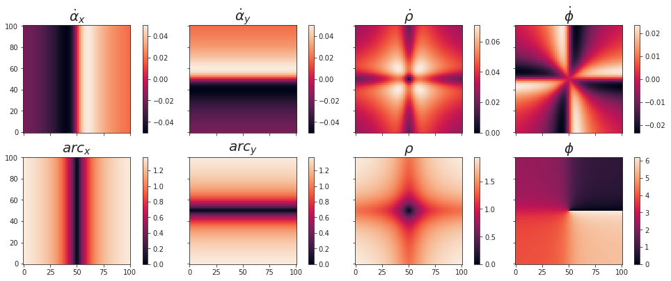
_show1(True)
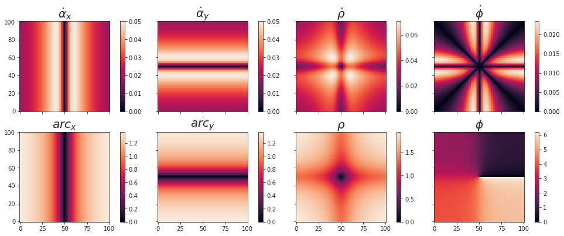
fig, ax = create_figure(figsize=(10, 4))
ax.axvline(45, ls='--', color='r', lw=1.5, zorder=0, alpha=1)
ax.axvline(45 + 90, ls='--', color='r', lw=1.5, zorder=0, alpha=1)
ax.axvline(45 + 180, ls='--', color='r', lw=1.5, zorder=0, alpha=1)
ax.axvline(360 - 45, ls='--', color='r', lw=1.5, zorder=0, alpha=1)
sns.histplot(np.rad2deg(phi.ravel()), bins=np.linspace(0, 360, 181), ax=ax, zorder=2)
plt.show()
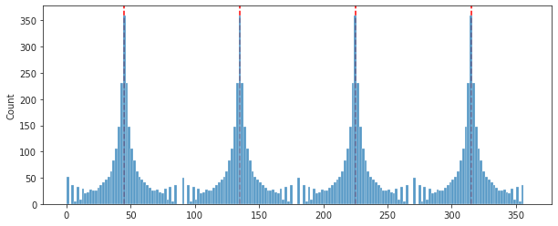
Change z (zoom out)¶
num = 50
width = 2 * num + 1
span = np.linspace(-num, num, width)
alpha_dot = np_nans((width, width, 2))
rho_dot = np_nans((width, width))
phi_dot = np_nans((width, width))
arc_x = np_nans((width, width))
arc_y = np_nans((width, width))
rho = np_nans((width, width))
phi = np_nans((width, width))
for i, x in enumerate(span):
for j, y in enumerate(span):
output = func(x, y, 1000)
alpha_dot[j, i, 0] = output['alpha_dot_x']
alpha_dot[j, i, 1] = output['alpha_dot_y']
rho_dot[j, i] = output['rho_dot']
phi_dot[j, i] = output['phi_dot']
arc_x[j, i] = output['arc_x']
arc_y[j, i] = output['arc_y']
rho[j, i] = output['rho']
phi[j, i] = output['phi']
_show1()
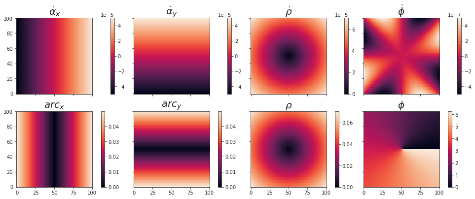
_show1(True)
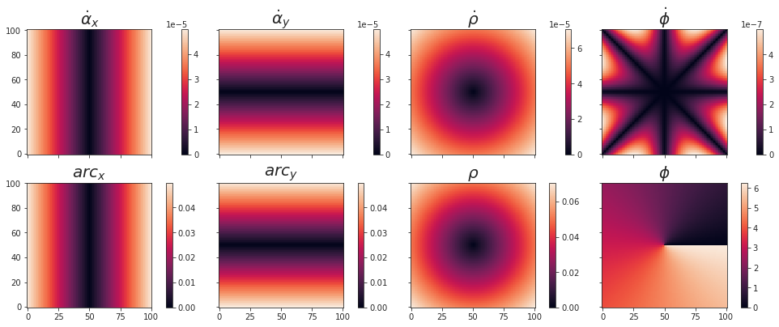
fig, ax = create_figure(figsize=(10, 4))
ax.axvline(45, ls='--', color='r', lw=1.5, zorder=0, alpha=1)
ax.axvline(45 + 90, ls='--', color='r', lw=1.5, zorder=0, alpha=1)
ax.axvline(45 + 180, ls='--', color='r', lw=1.5, zorder=0, alpha=1)
ax.axvline(360 - 45, ls='--', color='r', lw=1.5, zorder=0, alpha=1)
sns.histplot(np.rad2deg(phi.ravel()), bins=np.linspace(0, 360, 181), ax=ax, zorder=2)
plt.show()
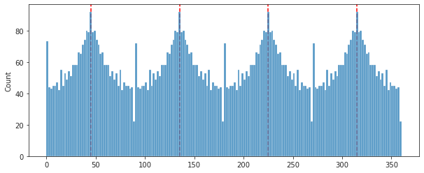
Show velocity field (optical flow)¶
num = 50
width = 2 * num + 1
span = np.linspace(-num, num, width)
alpha_dot = np_nans((width, width, 2))
for i, x in enumerate(span):
for j, y in enumerate(span):
output = func(x, y)
alpha_dot[j, i, 0] = output['alpha_dot_x']
alpha_dot[j, i, 1] = output['alpha_dot_y']
w = 20
xr = range(num-w, num+w+1)
fig, ax = create_figure(figsize=(10, 10))
ax.quiver(
span[xr],
span[xr],
alpha_dot[xr][:, xr][..., 0],
alpha_dot[xr][:, xr][..., 1],
scale=1.7,
)
<matplotlib.quiver.Quiver at 0x7f15cf16db50>
from skimage.transform import resize
fig, axes = create_figure(1, 2, (10, 5), constrained_layout=True)
axes[0].quiver(
span[xr],
span[xr],
alpha_dot[xr][:, xr][..., 0],
alpha_dot[xr][:, xr][..., 1],
scale=1,
)
axes[1].quiver(
range(-8, 8),
range(-8, 8),
resize(alpha_dot[..., 0], (16,) * 2),
resize(alpha_dot[..., 1], (16,) * 2),
scale=1,
)
ax_square(axes)
plt.show()
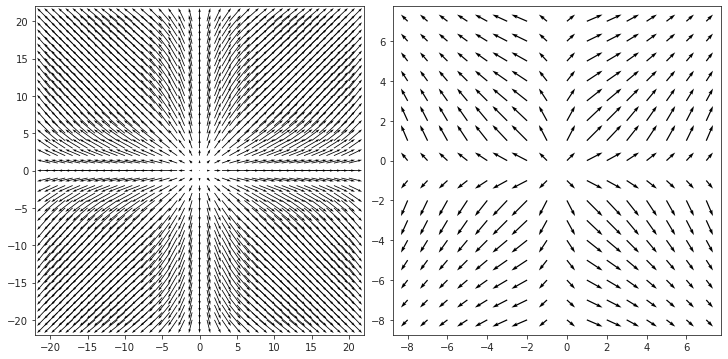
Allow more width¶
w = 32
xr = range(num-w, num+w+1)
fig, ax = create_figure(figsize=(10, 10))
ax.quiver(
span[xr],
span[xr],
alpha_dot[xr][:, xr][..., 0],
alpha_dot[xr][:, xr][..., 1],
scale=1.7,
)
<matplotlib.quiver.Quiver at 0x7f15cbb2c370>
from skimage.transform import resize
fig, axes = create_figure(1, 2, (10, 5), constrained_layout=True)
axes[0].quiver(
span[xr],
span[xr],
alpha_dot[xr][:, xr][..., 0],
alpha_dot[xr][:, xr][..., 1],
scale=1,
)
axes[1].quiver(
range(-8, 8),
range(-8, 8),
resize(alpha_dot[..., 0], (16,) * 2),
resize(alpha_dot[..., 1], (16,) * 2),
scale=1,
)
ax_square(axes)
plt.show()
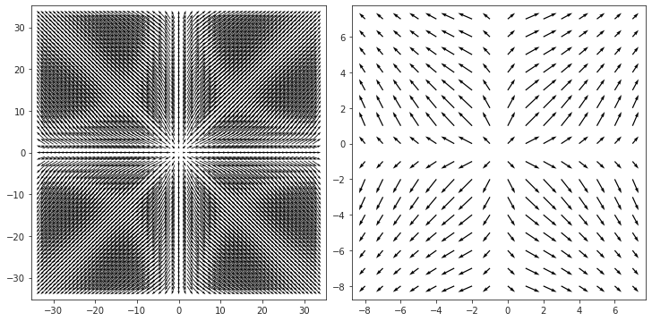